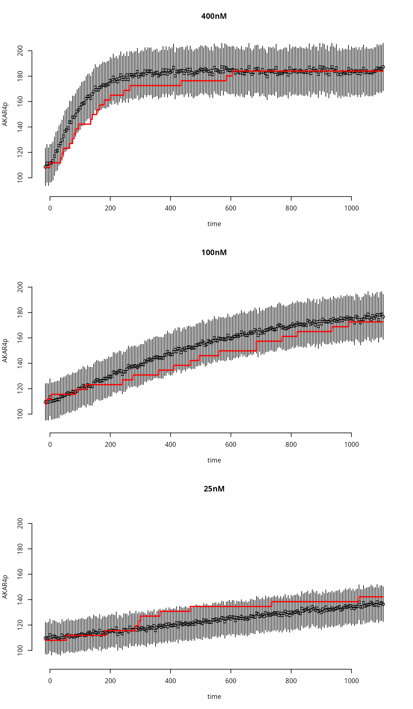

Simulation of a Stochastic Model for the AKAR4 reaction network
simAKAR4stochastic.RmdThis article provides code to simulate the AKAR4 stochastic model; one time, no sampling.
The Stochastic Model
When the copy number of molecular species in a reaction network system (AKAR4 in our case) is low, we cannot model the amount of molecules deterministically (e.g., with an ODE model), because the stochasticity in the reactions that take place cannot be ignored. In particular, the time at which reactions take place is random, as well as the specific reactions that take place (i.e., what pair of molecules react). To model such system we can use the chemical master equation (CME): we model the (integer) number of each molecule species in the system (e.g., proteins) and how the number of each molecule type (randomly) evolves in time, as a Markov jump process. We can easily sample trajectories from this stochastic model using Gillespie’s Stochastic Simulation algorithm. Given the current amount of each molecular species in the system at a given time point, we can sample the time at which the next reaction takes place and we can sample the type of reaction (i.e., what pair of molecules react).
However, we don’t expect the model files the systems biology content is stored in to change. Instead, we convert all information given in the TSV files into a CME model, with particle counts and propensities (automatically). Not all features of an ODE simulations are easy to transfer into the CME formalism: conservation law analysis, and event based transformations are currently not available.
To obtain the stochastic model for the reaction network, we need to determine the reaction propensities. These can be derived from the reaction rate coefficients: the parameters that we usually use in our models, and on which we perform uncertainty quantification. To derive the reaction propensities we referred to this article.
Load the Model
The AKAR4 model is included with the package.
f <- uqsa_example("AKAR4") # or some other files
m <- model_from_tsv(f)
cmeModel <- as_cme(m)
C <- generate_code(cmeModel,LV=1e8)
c_path(cmeModel) <- write_c_code(C)
#> Writing file: /tmp/RtmpckJSlH/269232967d52b2b5/AKAR4.c
so_path(cmeModel) <- shlib(cmeModel)
#> [1] "PKG_LIBS='-lgsl -lgslcblas -lm '"The shlib function creates a shared library, and stores
the path to it in the cmeModel object.
To generate the code, we decide on a value for LV:
Avogadro’s number multiplied by the system’s volume. Higher numbers mean
more particles (more reactions per time-span). This mumber can be
changed directly in the source code of the model (the C file),
afterwards, because it is used as a global constant in the C file.
Load Experiments (data)
ex <- experiments(m) # same as with ODE modelsSimulate
Function simstoch will output a function s,
which will always simulate the scenarios described in the experiments
ex (i.e., same initial conditions, same inputs), but for
user supplied parameters. This is the same structure as with
simulator.c for ODEs
We auto-generate C code, which uses the kinetic laws, but rescales
all parameters internally to have the unit 1/s and all
compound species are rescaled to be in particle counts. So, the internal
simulator can be used with the list of experiments that we use for ODE
models, with no changes. This rescaling is performed as described in this article.
Simulation
We simulate this compiled model, using the shared library:
The second argument can also be the path to the shared library. If it
is cmeModel, the path is extracted from it using:
Plot the results
tm <- ex[[1]]$outputTimes
par(mfrow=c(3,1),bty="n")
for (i in seq_along(ex)){
plot(
as.errors(tm),
ex[[i]]$data,
xlab="time",
ylab="AKAR4p",
main=names(ex)[i],
ylim=c(90,210)
)
lines(
tm,
y[[i]]$func,
lwd=2,
col="red",
type='s'
)
}
Benchmark
Stochastic simulations are slower than ODE simulations, this is a benchmark of the builtin stochastic solver:
if (require(rbenchmark)){
BM <- benchmark(
uqsa = {y <- st(p)},
replications = 5000
)
print(BM)
}
#> Loading required package: rbenchmark
#> test replications elapsed relative user.self sys.self user.child sys.child
#> 1 uqsa 5000 0.509 1 0.508 0.002 0 0